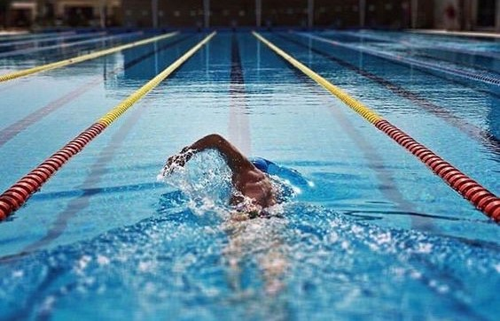

Le premier sport que j’ai pratiqué est la natation. En effet, apprendre à nager est quelque chose que je trouve important. Cette pratique m'a permis de découvrir l’univers du sport et de la compétition, j’ai pu alors remporter mes premières médailles et ainsi décrocher mon diplôme de nage. J’aime beaucoup ce sport car celui-ci m’a permis de passer du temps avec mes amis et de participer à de nombreuses compétitions.
Mon expérience:

Description:
La natation est un sport olympique qui se pratique en piscine, en eau libre (lac, mer), ou en
eau
vive
(rivière). C’est un sport individuel et collectif (dans le cas des relais), la natation consiste
à
parcourir
le
plus vite possible une distance à la nage dans une piscine homologuée.
En France la natation s'est beaucoup développée à partir des jeux de 1924. Mais la natation
n’est
pas
que
sport
de vitesse, elle regroupe le déplacement à la surface de l'eau et sous l'eau (plongée, natation
synchronisée,
water-polo), le plongeon et divers jeux pratiqués dans l'eau.

Les bienfaits de la natation:
La natation offre de nombreux avantages qui en font une activité appréciée par de nombreuses
personnes.
Tout
d'abord, c'est un excellent exercice pour tout le corps, car elle sollicite de nombreux muscles,
ce
qui
en
fait
un excellent moyen de rester en forme.
De plus, la natation est un sport à faible impact, ce
qui
signifie
qu'elle est douce pour les articulations, ce qui en fait une option idéale pour les personnes
souffrant
de
douleurs articulaires ou de blessures.Nager est aussi un excellent moyen de se détendre et de se
libérer
du
stress, car l'eau a un effet apaisant sur le corps et l'esprit.
En outre, la natation est une
activité
polyvalente qui peut être pratiquée à différents niveaux, que ce soit pour le plaisir, la
compétition ou
simplement pour rester en forme.